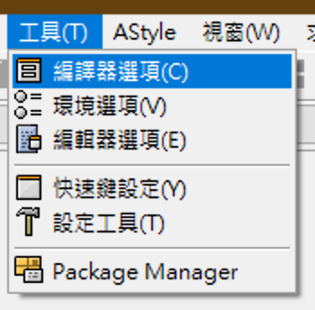

<!DOCTYPE html>
<html>
<head><meta name="generator" content="Hexo 3.9.0">
  <!-- hexo-inject:begin --><!-- hexo-inject:end --><meta charset="utf-8">
  <meta http-equiv="X-UA-Compatible" content="IE=edge">
  
  <!-- MathJax配置，可通过单美元符号书写行内公式等 -->
<script type="text/x-mathjax-config">
  MathJax.Hub.Config({
    "HTML-CSS": {
      preferredFont: "TeX",
      availableFonts: ["STIX","TeX"],
      linebreaks: { automatic:true },
      EqnChunk: (MathJax.Hub.Browser.isMobile ? 10 : 50)
    },
    tex2jax: {
      inlineMath: [ ["$", "$"], ["\\(","\\)"] ],
      processEscapes: true,
      ignoreClass: "tex2jax_ignore|dno",
      skipTags: ['script', 'noscript', 'style', 'textarea', 'pre', 'code']
    },
    TeX: {
      equationNumbers: { autoNumber: "AMS" },
      noUndefined: { attributes: { mathcolor: "red", mathbackground: "#FFEEEE", mathsize: "90%" } },
      Macros: { href: "{}" }
    },
    messageStyle: "none"
  });
</script>
<!-- 给MathJax元素添加has-jax class -->
<script type="text/x-mathjax-config">
  MathJax.Hub.Queue(function() {
    var all = MathJax.Hub.getAllJax(), i;
    for(i=0; i < all.length; i += 1) {
      all[i].SourceElement().parentNode.className += (all[i].SourceElement().parentNode.className ? ' ' : '') + 'has-jax';
    }
  });
</script>
<!-- 通过连接CDN加载MathJax的js代码 -->
<script type="text/javascript" async src="https://cdnjs.cloudflare.com/ajax/libs/mathjax/2.7.1/MathJax.js?config=TeX-MML-AM_CHTML">
</script>
  <title>Dev-C++ 手動更新編譯器至 G++ 8.2.0 | Jerry Yang&#39;s Blog</title>
  <meta name="description" content>
  <meta name="keywords" content>
  <meta name="HandheldFriendly" content="True">
  <meta name="apple-mobile-web-app-capable" content="yes">
  <link rel="shortcut icon" href="/">
  <link rel="alternate" href="/atom.xml" title="Jerry Yang's Blog">
  <meta name="viewport" content="width=device-width, initial-scale=1, maximum-scale=1">
  <meta name="description" content="這個筆記做一下記錄，我在 Windows 10 上的更新">
<meta name="keywords" content="Dev-C++,更新,程式,競賽">
<meta property="og:type" content="article">
<meta property="og:title" content="Dev-C++ 手動更新編譯器至 G++ 8.2.0">
<meta property="og:url" content="https://blog.yangjerry.tw/2019/11/30/devcplusplus-gplusplus-8/index.html">
<meta property="og:site_name" content="Jerry Yang&#39;s Blog">
<meta property="og:description" content="這個筆記做一下記錄，我在 Windows 10 上的更新">
<meta property="og:locale" content="zh-TW">
<meta property="og:image" content="https://blog.yangjerry.tw/2019/11/30/devcplusplus-gplusplus-8/mingw-download.png">
<meta property="og:image" content="https://blog.yangjerry.tw/2019/11/30/devcplusplus-gplusplus-8/mingw-install.png">
<meta property="og:image" content="https://blog.yangjerry.tw/2019/11/30/devcplusplus-gplusplus-8/mingw-location.png">
<meta property="og:image" content="https://blog.yangjerry.tw/2019/11/30/devcplusplus-gplusplus-8/mingw-imlist.png">
<meta property="og:image" content="https://blog.yangjerry.tw/2019/11/30/devcplusplus-gplusplus-8/mingw-mark.png">
<meta property="og:image" content="https://blog.yangjerry.tw/2019/11/30/devcplusplus-gplusplus-8/mingw-imresult.png">
<meta property="og:image" content="https://blog.yangjerry.tw/2019/11/30/devcplusplus-gplusplus-8/mingw-apply.png">
<meta property="og:image" content="https://blog.yangjerry.tw/2019/11/30/devcplusplus-gplusplus-8/win-location.png">
<meta property="og:image" content="https://blog.yangjerry.tw/2019/11/30/devcplusplus-gplusplus-8/win-bin.png">
<meta property="og:image" content="https://blog.yangjerry.tw/2019/11/30/devcplusplus-gplusplus-8/win-path.png">
<meta property="og:image" content="https://blog.yangjerry.tw/2019/11/30/devcplusplus-gplusplus-8/win-path-add.png">
<meta property="og:image" content="https://blog.yangjerry.tw/2019/11/30/devcplusplus-gplusplus-8/g++-v.png">
<meta property="og:image" content="https://blog.yangjerry.tw/2019/11/30/devcplusplus-gplusplus-8/dev-compile.png">
<meta property="og:image" content="https://blog.yangjerry.tw/2019/11/30/devcplusplus-gplusplus-8/dev-3plus.png">
<meta property="og:image" content="https://blog.yangjerry.tw/2019/11/30/devcplusplus-gplusplus-8/dev-choose.png">
<meta property="og:image" content="https://blog.yangjerry.tw/2019/11/30/devcplusplus-gplusplus-8/dev-gcc8.2.0.png">
<meta property="og:image" content="https://blog.yangjerry.tw/2019/11/30/devcplusplus-gplusplus-8/dev-c17.png">
<meta property="og:image" content="https://blog.yangjerry.tw/2019/11/30/devcplusplus-gplusplus-8/dev-testc17.png">
<meta property="og:image" content="https://blog.yangjerry.tw/2019/11/30/devcplusplus-gplusplus-8/dev-c17-warning.png">
<meta property="og:updated_time" content="2019-12-15T12:45:37.779Z">
<meta name="twitter:card" content="summary">
<meta name="twitter:title" content="Dev-C++ 手動更新編譯器至 G++ 8.2.0">
<meta name="twitter:description" content="這個筆記做一下記錄，我在 Windows 10 上的更新">
<meta name="twitter:image" content="https://blog.yangjerry.tw/2019/11/30/devcplusplus-gplusplus-8/mingw-download.png">
    
  <link href="https://fonts.googleapis.com/css?family=Inconsolata|Titillium+Web" rel="stylesheet">
  <link href="https://fonts.googleapis.com/css?family=Roboto+Mono" rel="stylesheet">
  <link href="//cdn.bootcss.com/node-waves/0.7.5/waves.min.css" rel="stylesheet">
  <link rel="stylesheet" href="/style.css">
  <script>
    function setLoadingBarProgress(num) {
      document.getElementById('loading-bar').style.width=num+"%";
    }
  </script>
<link rel="alternate" href="/atom.xml" title="Jerry Yang's Blog" type="application/atom+xml"><!-- hexo-inject:begin --><!-- hexo-inject:end -->
</head>
</html>
<body>
  <!-- hexo-inject:begin --><!-- hexo-inject:end --><div id="loading-bar-wrapper">
  <div id="loading-bar"></div>
</div>


  <script>setLoadingBarProgress(20)</script> 
  <header class="l_header">
	<div class='wrapper'>
		<div class="nav-main container container--flex">
			<a class="logo flat-box" href='/' >
				Jerry Yang's Blog
			</a>
			<div class='menu'>
				<ul class='h-list'>
					
						<li>
							<a class='flat-box nav-yangjerry' href='https://yangjerry.tw/'>
								Home
							</a>
						</li>
					
						<li>
							<a class='flat-box nav-home' href='/'>
								Blog
							</a>
						</li>
					
						<li>
							<a class='flat-box nav-archives' href='/archives'>
								Archives
							</a>
						</li>
					
						<li>
							<a class='flat-box nav-twitch' href='https://twitch.tv/tico88612'>
								Twitch
							</a>
						</li>
					
						<li>
							<a class='flat-box nav-about' href='/about'>
								About (unfinshed)
							</a>
						</li>
					
				</ul>
				<div class='underline'></div>
			</div>
			
				<div class="m_search">
					<form name="searchform" class="form u-search-form">
						<input type="text" class="input u-search-input" placeholder="Search" />
						<span class="icon icon-search"></span>
					</form>
				</div>
			
			<ul class='switcher h-list'>
				
					<li class='s-search'><a href='javascript:void(0)'><span class="icon icon-search flat-box"></span></a></li>
				
				<li class='s-menu'><a href='javascript:void(0)'><span class="icon icon-menu flat-box"></span></a></li>
			</ul>
		</div>
		
		<div class='nav-sub container container--flex'>
			<a class="logo" class="flat-box" href='javascript:void(0)'>
				Word of Forks
			</a>

			<ul class='switcher h-list'>
				<li class='s-comment'><a href='javascript:void(0)'><span class="icon icon-chat_bubble_outline flat-box"></span></a></li>
				<li class='s-top'><a href='javascript:void(0)'><span class="icon icon-arrow_upward flat-box"></span></a></li>
				<li class='s-toc'><a href='javascript:void(0)'><span class="icon icon-format_list_numbered flat-box"></span></a></li>
			</ul>
		</div>
	</div>
</header>
<aside class="menu-phone">
	<nav>
		
			<a href="https://yangjerry.tw/" class="nav-yangjerry nav">
				Home
			</a>
		
			<a href="/" class="nav-home nav">
				Blog
			</a>
		
			<a href="/archives" class="nav-archives nav">
				Archives
			</a>
		
			<a href="https://twitch.tv/tico88612" class="nav-twitch nav">
				Twitch
			</a>
		
			<a href="/about" class="nav-about nav">
				About (unfinshed)
			</a>
		
	</nav>
</aside>

    <script>setLoadingBarProgress(40);</script>
  <div class="l_body">
    <div class='container clearfix'>
      <div class='l_main'>
        <article id="post-devcplusplus-gplusplus-8"
  class="post white-box article-type-post"
  itemscope itemprop="blogPost">
	<section class='meta'>
	<h2 class="title">
  	<a href="/2019/11/30/devcplusplus-gplusplus-8/">
    	Dev-C++ 手動更新編譯器至 G++ 8.2.0
    </a>
  </h2>
	<time>
	  11月 30, 2019
	</time>
	
    
    <div class='cats'>
        <a href="/categories/生活/">生活</a>, <a href="/categories/生活/程式/">程式</a>
    </div>

	</section>
	
		<section class="toc-wrapper"><ol class="toc"><li class="toc-item toc-level-2"><a class="toc-link" href="#1-安裝-MinGW"><span class="toc-number">1.</span> <span class="toc-text">1. 安裝 MinGW</span></a></li><li class="toc-item toc-level-2"><a class="toc-link" href="#2-Dev-C-加入-MinGW-G-8-2-0"><span class="toc-number">2.</span> <span class="toc-text">2. Dev-C++ 加入 MinGW G++ 8.2.0</span></a></li><li class="toc-item toc-level-2"><a class="toc-link" href="#3-注意事項"><span class="toc-number">3.</span> <span class="toc-text">3. 注意事項</span></a></li><li class="toc-item toc-level-2"><a class="toc-link" href="#後記-Afterword"><span class="toc-number">4.</span> <span class="toc-text">後記 Afterword</span></a></li></ol></section>
	
	<section class="article typo">
  	<div class="article-entry" itemprop="articleBody">
    	<p>這個筆記做一下記錄，我在 Windows 10 上的更新</p>
<a id="more"></a>

<p>很多人都知道 Dev-C++ 已經算是不更新的 IDE 了<br>但我在 Windows 寫 C / C++ 還是用 Dev-C++<br>可是版本停留在 TDM-GCC 4.9.2（Windows 最新的版本為 G++ 8.2.0）<br>新版的標準想使用都不能用<br>我們直接來手動更新吧！</p>
<h2 id="1-安裝-MinGW"><a href="#1-安裝-MinGW" class="headerlink" title="1. 安裝 MinGW"></a>1. 安裝 MinGW</h2><p>進到 <a href="http://www.mingw.org/" target="_blank" rel="noopener">MinGW 官網</a> 點入 Downloads</p>
<p>進入後請你找到 <strong>mingw-get-setup.exe</strong> 並下載</p>
<p></p>
<p><a href="https://osdn.net/projects/mingw/downloads/68260/mingw-get-setup.exe/" target="_blank" rel="noopener">下載連結參考</a></p>
<p>就開始 Install</p>
<p></p>
<p>選擇路徑，需要記得位置！</p>
<p></p>
<p>點下去就會開始安裝，安裝完畢後就開啟 <strong>MinGW Installation Manager</strong></p>
<p></p>
<p>把 mingw32-base-bin 跟 mingw32-gcc-g++-bin 這兩個 <strong>Mark for Installation</strong></p>
<p></p>
<p></p>
<p>然後就 <strong>Apply Changes</strong> </p>
<p></p>
<p>點下 <strong>Apply</strong></p>
<p>安裝完畢後，進到你安裝的路徑</p>
<p></p>
<p>進入 bin 資料夾，複製路徑</p>
<p></p>
<p>編輯環境變數 Path</p>
<p></p>
<p>加入到環境變數 Path</p>
<p></p>
<p>確定後，打開「命令提示字元」輸入 <code>g++ -v</code></p>
<p></p>
<p>如果顯示這些文字，就是安裝成功</p>
<h2 id="2-Dev-C-加入-MinGW-G-8-2-0"><a href="#2-Dev-C-加入-MinGW-G-8-2-0" class="headerlink" title="2. Dev-C++ 加入 MinGW G++ 8.2.0"></a>2. Dev-C++ 加入 MinGW G++ 8.2.0</h2><p>打開 Dev-C++ 工具 $\rightarrow$ 編譯器選項</p>
<p></p>
<p>按到第三個 $+$</p>
<p></p>
<p>選擇你剛剛 MinGW 安裝的地方</p>
<p></p>
<p>成功的話，上方就會自己變更為 MinGW GCC 8.2.0</p>
<p></p>
<p>因為舊版 Dev-C++ 語言標準只有停留在 C++11，我們下方命令列手動加入 <code>-std=c++17</code></p>
<p></p>
<p>按下確定後，就可以來測試 Sample Code 了</p>
<figure class="highlight c++"><table><tr><td class="gutter"><pre><span class="line">1</span><br><span class="line">2</span><br><span class="line">3</span><br><span class="line">4</span><br><span class="line">5</span><br><span class="line">6</span><br><span class="line">7</span><br><span class="line">8</span><br><span class="line">9</span><br><span class="line">10</span><br><span class="line">11</span><br><span class="line">12</span><br><span class="line">13</span><br><span class="line">14</span><br><span class="line">15</span><br><span class="line">16</span><br><span class="line">17</span><br><span class="line">18</span><br><span class="line">19</span><br><span class="line">20</span><br></pre></td><td class="code"><pre><span class="line"><span class="meta">#<span class="meta-keyword">include</span><span class="meta-string">&lt;iostream&gt;</span></span></span><br><span class="line"><span class="meta">#<span class="meta-keyword">include</span><span class="meta-string">&lt;tuple&gt;</span></span></span><br><span class="line"><span class="keyword">using</span> <span class="keyword">namespace</span> <span class="built_in">std</span>;</span><br><span class="line"></span><br><span class="line"><span class="built_in">std</span>::tuple&lt;<span class="keyword">char</span>, <span class="keyword">int</span>, <span class="keyword">bool</span>&gt; mytuple()</span><br><span class="line">&#123;</span><br><span class="line">    <span class="keyword">char</span> a = <span class="string">'a'</span>;</span><br><span class="line">    <span class="keyword">int</span> i = <span class="number">123</span>;</span><br><span class="line">    <span class="keyword">bool</span> b = <span class="literal">true</span>;</span><br><span class="line">    <span class="keyword">return</span> <span class="built_in">std</span>::make_tuple(a, i, b);</span><br><span class="line">&#125;</span><br><span class="line"></span><br><span class="line"><span class="function"><span class="keyword">int</span> <span class="title">main</span><span class="params">()</span></span></span><br><span class="line"><span class="function"></span>&#123;</span><br><span class="line">	<span class="keyword">auto</span> [a, i, b] = mytuple();</span><br><span class="line">	<span class="comment">// Structured Bindings in C++17 is available.</span></span><br><span class="line">	<span class="comment">// Using in C++14 will get warning.</span></span><br><span class="line">	<span class="built_in">cout</span> &lt;&lt; <span class="string">"Hello C++17 "</span> &lt;&lt; a &lt;&lt; <span class="string">" "</span> &lt;&lt; i &lt;&lt; <span class="string">" "</span> &lt;&lt; b &lt;&lt; <span class="built_in">endl</span>;</span><br><span class="line">	<span class="keyword">return</span> <span class="number">0</span>;</span><br><span class="line">&#125;</span><br></pre></td></tr></table></figure>

<p></p>
<h2 id="3-注意事項"><a href="#3-注意事項" class="headerlink" title="3. 注意事項"></a>3. 注意事項</h2><p>如果你是競賽選手，你應該知道 GNU 的編譯器有個 <strong>bits/stdc++.h</strong> 引入所有函式庫的黑魔法</p>
<p>但是直接使用會 Compile Error</p>
<p></p>
<p>個人爬了一下 Reddit 的 C++ 版</p>
<p>得知 C++17 的 <code>filesystem</code> 跟 <code>charconv</code> 在 Windows 是無法得到原生支援的</p>
<p>只有 Unix 的相關成員才能做得到（E.g. Mac / Linux）</p>
<p>所以前面 <strong>bits/stdc++.h</strong> include 進來以前先把 <code>filesystem</code> 跟 <code>charconv</code> Define 掉</p>
<figure class="highlight c++"><table><tr><td class="gutter"><pre><span class="line">1</span><br><span class="line">2</span><br><span class="line">3</span><br><span class="line">4</span><br><span class="line">5</span><br><span class="line">6</span><br><span class="line">7</span><br><span class="line">8</span><br><span class="line">9</span><br><span class="line">10</span><br><span class="line">11</span><br><span class="line">12</span><br><span class="line">13</span><br><span class="line">14</span><br><span class="line">15</span><br><span class="line">16</span><br><span class="line">17</span><br><span class="line">18</span><br><span class="line">19</span><br><span class="line">20</span><br><span class="line">21</span><br></pre></td><td class="code"><pre><span class="line"><span class="meta">#<span class="meta-keyword">define</span> _GLIBCXX_FILESYSTEM 1</span></span><br><span class="line"><span class="meta">#<span class="meta-keyword">define</span> _GLIBCXX_CHARCONV 1</span></span><br><span class="line"><span class="meta">#<span class="meta-keyword">include</span><span class="meta-string">&lt;bits/stdc++.h&gt;</span></span></span><br><span class="line"><span class="keyword">using</span> <span class="keyword">namespace</span> <span class="built_in">std</span>;</span><br><span class="line"></span><br><span class="line"><span class="built_in">std</span>::tuple&lt;<span class="keyword">char</span>, <span class="keyword">int</span>, <span class="keyword">bool</span>&gt; mytuple()</span><br><span class="line">&#123;</span><br><span class="line">    <span class="keyword">char</span> a = <span class="string">'a'</span>;</span><br><span class="line">    <span class="keyword">int</span> i = <span class="number">123</span>;</span><br><span class="line">    <span class="keyword">bool</span> b = <span class="literal">true</span>;</span><br><span class="line">    <span class="keyword">return</span> <span class="built_in">std</span>::make_tuple(a, i, b);</span><br><span class="line">&#125;</span><br><span class="line"></span><br><span class="line"><span class="function"><span class="keyword">int</span> <span class="title">main</span><span class="params">()</span></span></span><br><span class="line"><span class="function"></span>&#123;</span><br><span class="line">	<span class="keyword">auto</span> [a, i, b] = mytuple();</span><br><span class="line">	<span class="comment">// Structured Bindings in C++17 is available.</span></span><br><span class="line">	<span class="comment">// Using in C++14 will get warning.</span></span><br><span class="line">	<span class="built_in">cout</span> &lt;&lt; <span class="string">"Hello C++17 "</span> &lt;&lt; a &lt;&lt; <span class="string">" "</span> &lt;&lt; i &lt;&lt; <span class="string">" "</span> &lt;&lt; b &lt;&lt; <span class="built_in">endl</span>;</span><br><span class="line">	<span class="keyword">return</span> <span class="number">0</span>;</span><br><span class="line">&#125;</span><br></pre></td></tr></table></figure>

<h2 id="後記-Afterword"><a href="#後記-Afterword" class="headerlink" title="後記 Afterword"></a>後記 Afterword</h2><p>我後來發現 Code::Blocks 用 C++17 的 <strong>bits/stdc++.h</strong> 也有同個問題。</p>
<p>果然真的沒有原生 Windows 支援（唯一希望應該是 MSVC++ 的編譯器）</p>
<p>我想這就是 MinGW 一直沒有讓 G++ 上去 9.2.0 的關係吧！</p>

  	</div>
	  
	  <div class="article-tags tags">
      
        <a href="/tags/Dev-C/">Dev-C++</a>
      
        <a href="/tags/更新/">更新</a>
      
        <a href="/tags/程式/">程式</a>
      
        <a href="/tags/競賽/">競賽</a>
      
	  </div>
    
		
	
		<div class="art-item-footer">
				
					<span class="art-item-left"><i class="icon icon-chevron-thin-left"></i>prev：<a href="/2019/12/18/flutter-url-encoder/" rel="prev"  title="Flutter 心得 和 URL 網址無法打開之踩雷">
						Flutter 心得 和 URL 網址無法打開之踩雷 
					</a></span>
				
				
					<span class="art-item-right">next：<a href="/2019/11/23/zj-c421/" rel="next"  title="c421. pA 雲端列印">
						c421. pA 雲端列印
					</a><i class="icon icon-chevron-thin-right"></i></span>
				
		</div>
	
	</section>
	
</article>
<script>
	window.subData = {
		title: 'Dev-C++ 手動更新編譯器至 G++ 8.2.0',
		tools: true
	}
</script>

      </div>
      <aside class='l_side'>
        
  <section class='m_widget about'>


<div class='header'>Jerry Yang</div>
<div class='content'>
<div class='desc'>請問這是 Blog 嗎？
</div>
</div>
</section>

  <section class='m_widget links'>
<div class='header'>Links</div>
<div class='content'>
    <ul class="entry">
    
        <li><a class="flat-box" target="_blank" href="https://www.tcumyinfo.tw/">
            <div class='name'>慈大校務系統 手機版</div>
        </a></li>
    
        <li><a class="flat-box" target="_blank" href="https://tcshoj.tw/">
            <div class='name'>TCSH Online Judge</div>
        </a></li>
    
        <li><a class="flat-box" target="_blank" href="https://zerojudge.tw/">
            <div class='name'>ZeroJudge</div>
        </a></li>
    
        <li><a class="flat-box" target="_blank" href="https://onlinejudge.org/">
            <div class='name'>UVa Online Judge</div>
        </a></li>
    
        <li><a class="flat-box" target="_blank" href="https://lfswang.github.io/">
            <div class='name'>LFsWang&#39;s World</div>
        </a></li>
    
        <li><a class="flat-box" target="_blank" href="https://sunmoon-template.blogspot.com/">
            <div class='name'>日月卦長的模板庫</div>
        </a></li>
    
    </ul>
</div>
</section>

  <section class='m_widget categories'>
<div class='header'>Categories</div>
<div class='content'>
    
    <ul class="entry">
    
        <li><a class="flat-box" href="/categories/程式/Flutter/"><div class='name'>Flutter</div><div class='badget'>1</div></a></li>
    
        <li><a class="flat-box" href="/categories/比賽心得區/Google-Code-Jam/"><div class='name'>Google Code Jam</div><div class='badget'>1</div></a></li>
    
        <li><a class="flat-box" href="/categories/Hello-World/"><div class='name'>Hello World</div><div class='badget'>1</div></a></li>
    
        <li><a class="flat-box" href="/categories/師培筆記/"><div class='name'>師培筆記</div><div class='badget'>1</div></a></li>
    
        <li><a class="flat-box" href="/categories/師培筆記/師培筆記-教育哲學/"><div class='name'>師培筆記 - 教育哲學</div><div class='badget'>1</div></a></li>
    
        <li><a class="flat-box" href="/categories/比賽心得區/"><div class='name'>比賽心得區</div><div class='badget'>1</div></a></li>
    
        <li><a class="flat-box" href="/categories/演講筆記/"><div class='name'>演講筆記</div><div class='badget'>1</div></a></li>
    
        <li><a class="flat-box" href="/categories/生活/"><div class='name'>生活</div><div class='badget'>5</div></a></li>
    
        <li><a class="flat-box" href="/categories/程式/"><div class='name'>程式</div><div class='badget'>1</div></a></li>
    
        <li><a class="flat-box" href="/categories/生活/程式/"><div class='name'>程式</div><div class='badget'>4</div></a></li>
    
        <li><a class="flat-box" href="/categories/生活/程式日常/"><div class='name'>程式日常</div><div class='badget'>0</div></a></li>
    
        <li><a class="flat-box" href="/categories/解題區/"><div class='name'>解題區</div><div class='badget'>15</div></a></li>
    
        <li><a class="flat-box" href="/categories/解題區/解題報告書-ZeroJudge/"><div class='name'>解題報告書 - ZeroJudge</div><div class='badget'>14</div></a></li>
    
        <li><a class="flat-box" href="/categories/解題區/解題報告書-洛谷OJ/"><div class='name'>解題報告書 - 洛谷OJ</div><div class='badget'>1</div></a></li>
    
    </ul>
    
</div>
</section>

  
<div class="m_widget tagcloud">
    <div class="header">Tags</div>
    <div class='content'>
        <a href="/tags/2019/" style="font-size: 14px; color: #808080">2019</a> <a href="/tags/Binary-Index-Tree/" style="font-size: 14px; color: #808080">Binary Index Tree</a> <a href="/tags/Bit-運算/" style="font-size: 14px; color: #808080">Bit 運算</a> <a href="/tags/DFS/" style="font-size: 14px; color: #808080">DFS</a> <a href="/tags/DP/" style="font-size: 17px; color: #404040">DP</a> <a href="/tags/Dev-C/" style="font-size: 14px; color: #808080">Dev-C++</a> <a href="/tags/Digi/" style="font-size: 14px; color: #808080">Digi</a> <a href="/tags/Fenwick-Tree/" style="font-size: 14px; color: #808080">Fenwick Tree</a> <a href="/tags/Flutter/" style="font-size: 14px; color: #808080">Flutter</a> <a href="/tags/Google-Code-Jam/" style="font-size: 14px; color: #808080">Google Code Jam</a> <a href="/tags/IO-優化/" style="font-size: 14px; color: #808080">IO 優化</a> <a href="/tags/NCPU/" style="font-size: 14px; color: #808080">NCPU</a> <a href="/tags/PI/" style="font-size: 14px; color: #808080">PI</a> <a href="/tags/Queue/" style="font-size: 14px; color: #808080">Queue</a> <a href="/tags/Special-Judge/" style="font-size: 14px; color: #808080">Special Judge</a> <a href="/tags/Stack/" style="font-size: 14px; color: #808080">Stack</a> <a href="/tags/XOR/" style="font-size: 17px; color: #404040">XOR</a> <a href="/tags/multiset/" style="font-size: 14px; color: #808080">multiset</a> <a href="/tags/url-launcher/" style="font-size: 14px; color: #808080">url_launcher</a> <a href="/tags/二分搜/" style="font-size: 14px; color: #808080">二分搜</a> <a href="/tags/倍數判斷法/" style="font-size: 14px; color: #808080">倍數判斷法</a> <a href="/tags/公式解/" style="font-size: 14px; color: #808080">公式解</a> <a href="/tags/剪枝/" style="font-size: 14px; color: #808080">剪枝</a> <a href="/tags/助教/" style="font-size: 14px; color: #808080">助教</a> <a href="/tags/卡特蘭數/" style="font-size: 14px; color: #808080">卡特蘭數</a> <a href="/tags/問題/" style="font-size: 14px; color: #808080">問題</a> <a href="/tags/字串處理/" style="font-size: 14px; color: #808080">字串處理</a> <a href="/tags/學分/" style="font-size: 14px; color: #808080">學分</a> <a href="/tags/工研院/" style="font-size: 14px; color: #808080">工研院</a> <a href="/tags/建表/" style="font-size: 20px; color: #000">建表</a> <a href="/tags/慈濟/" style="font-size: 14px; color: #808080">慈濟</a> <a href="/tags/新手/" style="font-size: 14px; color: #808080">新手</a> <a href="/tags/時間複雜度/" style="font-size: 14px; color: #808080">時間複雜度</a> <a href="/tags/普悠瑪出軌事件/" style="font-size: 14px; color: #808080">普悠瑪出軌事件</a> <a href="/tags/暑假/" style="font-size: 14px; color: #808080">暑假</a> <a href="/tags/更新/" style="font-size: 14px; color: #808080">更新</a> <a href="/tags/柯P/" style="font-size: 14px; color: #808080">柯P</a> <a href="/tags/洞穴寓言/" style="font-size: 14px; color: #808080">洞穴寓言</a> <a href="/tags/清大暑期程式競賽集訓營/" style="font-size: 14px; color: #808080">清大暑期程式競賽集訓營</a> <a href="/tags/演講筆記/" style="font-size: 14px; color: #808080">演講筆記</a> <a href="/tags/理型論/" style="font-size: 14px; color: #808080">理型論</a> <a href="/tags/生活/" style="font-size: 14px; color: #808080">生活</a> <a href="/tags/程式/" style="font-size: 17px; color: #404040">程式</a> <a href="/tags/窮舉/" style="font-size: 14px; color: #808080">窮舉</a> <a href="/tags/競賽/" style="font-size: 14px; color: #808080">競賽</a> <a href="/tags/負數取Mod/" style="font-size: 14px; color: #808080">負數取Mod</a> <a href="/tags/費氏數列/" style="font-size: 14px; color: #808080">費氏數列</a> <a href="/tags/超修/" style="font-size: 14px; color: #808080">超修</a> <a href="/tags/進位制/" style="font-size: 14px; color: #808080">進位制</a> <a href="/tags/鋼琴/" style="font-size: 14px; color: #808080">鋼琴</a>
    </div>
</div>


      </aside>
      <script>setLoadingBarProgress(60);</script>
    </div>
  </div>
  <footer id="footer" class="clearfix">

	<div class="social-wrapper">
  	
      
        <a href="https://facebook.com/tico88612" class="social facebook"
          target="_blank" rel="external">
          <span class="icon icon-facebook"></span>
        </a>
      
        <a href="https://instagram.com/jerry_love_linda" class="social instagram"
          target="_blank" rel="external">
          <span class="icon icon-instagram"></span>
        </a>
      
        <a href="https://github.com/tico88612" class="social github"
          target="_blank" rel="external">
          <span class="icon icon-github"></span>
        </a>
      
        <a href="https://linkedin.com/tico88612" class="social linkedin"
          target="_blank" rel="external">
          <span class="icon icon-linkedin"></span>
        </a>
      
        <a href="mailto:tico88612@gmail.com" class="social mail"
          target="_blank" rel="external">
          <span class="icon icon-mail"></span>
        </a>
      
        <a href="/atom.xml" class="social rss"
          target="_blank" rel="external">
          <span class="icon icon-rss"></span>
        </a>
      
    
  </div>
  
  <div>Theme <a href='https://github.com/stkevintan/hexo-theme-material-flow' class="codename">MaterialFlow</a> designed by <a href="http://keyin.me/" target="_blank">Kevin Tan</a>.</div>
  
</footer>


  <script>setLoadingBarProgress(80);</script>
  

<script src="//apps.bdimg.com/libs/jquery/2.1.4/jquery.min.js"></script>
<script src='//cdn.bootcss.com/node-waves/0.7.5/waves.min.js'></script>
<script src="//cdn.bootcss.com/scrollReveal.js/3.3.2/scrollreveal.min.js"></script>
<script src="/js/jquery.fitvids.js"></script>
<script>
	var GOOGLE_CUSTOM_SEARCH_API_KEY = "";
	var GOOGLE_CUSTOM_SEARCH_ENGINE_ID = "";
	var ALGOLIA_API_KEY = "";
	var ALGOLIA_APP_ID = "";
	var ALGOLIA_INDEX_NAME = "";
  var AZURE_SERVICE_NAME = "";
  var AZURE_INDEX_NAME = "";
  var AZURE_QUERY_KEY = "";
  var BAIDU_API_ID = "";
  var SEARCH_SERVICE = "hexo";
  var ROOT = "/"||"/";
  if(!ROOT.endsWith('/'))ROOT += '/';
</script>
<script src="/js/search.js"></script>
<script src="/js/app.js"></script>


  <script>setLoadingBarProgress(100);</script><!-- hexo-inject:begin --><!-- Begin: Injected MathJax -->
<script type="text/x-mathjax-config">
  MathJax.Hub.Config("");
</script>

<script type="text/x-mathjax-config">
  MathJax.Hub.Queue(function() {
    var all = MathJax.Hub.getAllJax(), i;
    for(i=0; i < all.length; i += 1) {
      all[i].SourceElement().parentNode.className += ' has-jax';
    }
  });
</script>

<script type="text/javascript" src="">
</script>
<!-- End: Injected MathJax -->
<!-- hexo-inject:end -->
</body>
</html>
